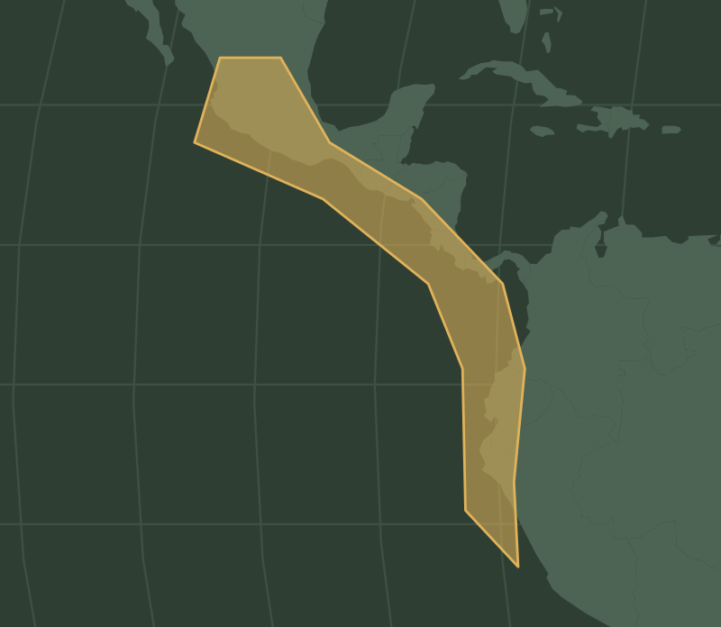

Planta · Convolvuláceas · México y Centroamérica
Ololiuqui
Ipomoea corymbosa (L.) Roth
Una trepadora leñosa de México y Centroamérica cuyas semillas, el ololiuqui, usaron los mexicas con fines medicinales y adivinatorios. Su identificación botánica, en 1939 y 1941, y el aislamiento de su ergina por Albert Hofmann en 1960 forman una de las historias más conocidas de la etnobotánica.124
También se llamaololiuqui · ololiuhqui · coatl xoxouhqui · semilla de la Virgen · piule · Rivea corymbosa · Turbina corymbosa
- Qué es
- Trepadora leñosa de la familia de las campanillas
- Territorio
- De México a Perú, naturalizada en otras partes
- Parte usada
- La semilla
- Principios activos
- Ergina (LSA) e isoergina
- Empieza y dura
- Sin datos fiables
- Quién guarda su memoria
- Mexicas, mazatecos, chinantecos y zapotecos
Botánica
Una trepadora de semillas pardas y redondas
Ipomoea corymbosa es una especie de campanilla nativa de toda Latinoamérica, desde México hasta Perú, y naturalizada en otros lugares. Entre sus nombres populares en inglés están Christmasvine y snakeplant.3
Es una trepadora grande y leñosa de la familia de las convolvuláceas.5 Sus semillas son pardas y casi redondas, y se distinguen de las de Ipomoea violacea, que son largas, negras y angulosas.6
El nombre científico ha cambiado varias veces: se la conoce también como Rivea corymbosa y Turbina corymbosa.37
- Familia
- Convolvulaceae
- Hábito
- Trepadora grande y leñosa
- Semilla
- Parda y casi redonda
- Distribución
- De México a Perú
Memoria y tradición
La semilla de la Virgen
Tras la conquista de México, en 1521, varios cronistas españoles describieron rituales religiosos de los mexicas y otros pueblos que usaban las semillas del ololiuqui por su efecto embriagante.5 Un informe de la época habla de una hierba llamada cóatl-xoxouhqui, «serpiente verde», cuyas semillas eran el ololiuqui.4
Un misionero español dijo que privaba de razón a quien lo tomaba y que era el modo en que los nativos se comunicaban con el diablo.5 Es una mirada colonial; la tradición indígena lo entendía como medicina y adivinación.8
En la región mazateca las semillas se conocen hoy como «la semilla de la Virgen».1 Los chinantecos la llaman a-mu-kia, «medicina de adivinación», y los mazatecos piule.4
Los botánicos tardaron en aceptar que fuera una campanilla. Durante años se pensó que el ololiuqui no podía serlo, pues no se conocía ningún uso intoxicante de esas semillas ni ningún constituyente tóxico en la familia. Aun así, varios botánicos mexicanos sostuvieron que lo era, y en 1939 Schultes y Reko recogieron en Oaxaca un ejemplar de una convolvulácea usada como narcótico adivinatorio: era Rivea corymbosa.2
En 1960, Albert Hofmann describió su composición química: contiene ergina, un alcaloide ergolínico emparentado con el LSD.3 Aisló la ergina y la isoergina, que ya conocía como análogos semisintéticos del LSD.1
En el tiempo
Tras la conquista, los cronistas españoles describen el uso ritual de las semillas.5
Schultes y Reko recogen en Oaxaca la planta usada como narcótico adivinatorio.2
Hofmann describe su composición química y aísla la ergina.13
Sus nombres
- ololiuqui
- del náhuatl; designa las semillas pardas de la planta
- cóatl-xoxouhqui
- «serpiente verde», nombre de la hierba
- la semilla de la Virgen
- nombre mazateco, en Huautla
- piule
- nombre mazateco
- a-mu-kia
- chinanteco: «medicina de adivinación»
No hay que confundirlo con el tlitliltzin, que son las semillas negras de otra campanilla (Ipomoea tricolor).69
Territorio y cuidado
De México al Perú

Crece de forma nativa en toda Latinoamérica, desde México por el norte hasta Perú por el sur, y se ha naturalizado en otros lugares.3
Esa amplitud la convierte en una planta común de jardines y cercados, pero su valor para los pueblos que la custodian está en su uso medicinal y adivinatorio, no en la planta como curiosidad.
Qué ayuda
- Aprender su historia desde la voz de los pueblos mazateco, chinanteco y zapoteco.
- No tratarla como un producto: es una planta de medicina y de memoria.
- Evitar la compra de semillas sin información fiable sobre su origen y contenido.
Qué contiene
Ergina, un alcaloide ergolínico
Las semillas contienen ergina, también llamada amida del ácido lisérgico o LSA, un alcaloide ergolínico emparentado con el LSD.3 También contienen isoergina.1
Hofmann señaló que la ergina y la isoergina se conocían antes como análogos semisintéticos del LSD, antes de hallarlas en una planta.1
Amida del ácido lisérgico; el alcaloide principal de las semillas.[1][4]
Amida del ácido isolisérgico, acompañante de la ergina.[1]
La experiencia
Lo que se sabe y lo que no
Las fuentes históricas hablan de un uso con fines medicinales y adivinatorios.28 Sobre la experiencia en sí no hay medidas fiables de cuándo empieza ni cuánto dura.
Las semillas de Ipomoea violacea se creen más potentes que las de Rivea corymbosa.6
Esquema orientativo: cambia con la preparación, la cantidad y la persona.
Investigación
Qué se ha estudiado
Lo mejor documentado es la botánica y la química: la identificación de la planta en 1939 y 1941, y el aislamiento de las ergolinas en 1960.123
Hubo avances posteriores en la fitoquímica de las convolvuláceas y en la farmacología de los compuestos aislados de sus semillas.8
Alcance de estos datosNo hay ensayos clínicos con estas semillas. Lo que se sabe de su uso viene de crónicas históricas y de estudios de química.
Con cuidado
Lo que conviene saber antes
Es una semilla de uso tradicional, no un producto de consumo, y su contenido de alcaloides no se conoce en lo que se compra.1
Hay semillas de campanilla de jardín con alcaloides parecidos; no se sabe cuál es cuál sin análisis.6
Faltan estudios sobre sus efectos y riesgos en seres humanos.
Para seguir
Libros y medicinas emparentadas
Fuentes
De dónde sale cada dato
- Hofmann A. The active principles of the seeds of Rivea corymbosa and Ipomoea violacea. Botanical Museum Leaflets, Harvard University. 1963;20:194-212.
- Schultes RE. Planta Medica. 1976;29 (artículo sobre las convolvuláceas alucinógenas). bibliography.maps.org/resources/download/15072.
- Wikipedia. «Ipomoea corymbosa». en.wikipedia.org (consultada el 24-11-2026).
- ICEERS. Basic info: ergot, LSA and morning glory. iceers.org/?p=5549.
- ICEERS. Ipomoea violacea: basic info. iceers.org/ipomoea-violacea-basic-info/.
- Wasson RG. Notes on the present status of ololiuqui and the other hallucinogens of Mexico. druglibrary.org/Schaffer/lsd/wasson.htm.
- Wikidoc. «Rivea corymbosa». wikidoc.org/index.php/Rivea_corymbosa.
- Ololiuqui, Tlitliltzin and related pre-Columbian Central American convolvulaceous drugs. bibliography.maps.org/resources/download/13618.
- Wikipedia. «Aztec use of entheogens». en.wikipedia.org (consultada el 24-11-2026).
- Mapa APDER, con datos de Natural Earth · dominio público
- Dibujos de moléculas APDER
Última revisión: 24 de noviembre de 2026. Si ves un error, escríbenos a info@apder.org.